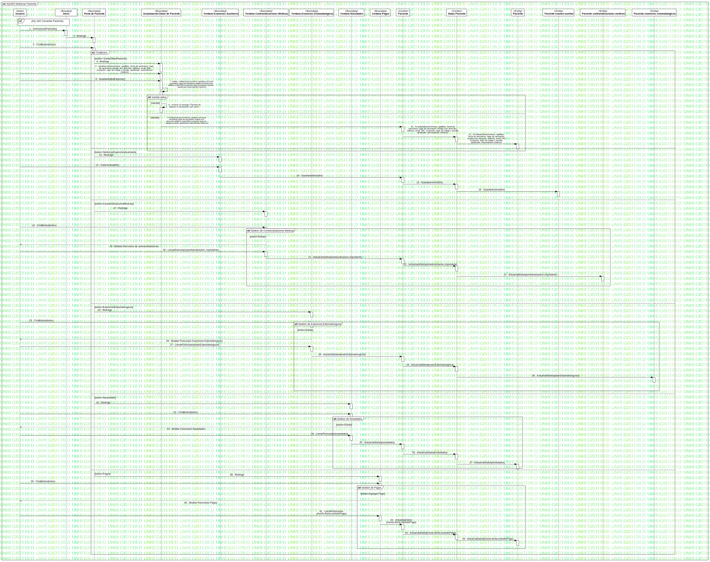

SQ-003 Gestionar Paciente
UMLInteraction
Dentware
::
Modelo de diseño
::
Modelo de interacción
::
SQ-003 Gestionar Paciente
Description
none
Diagrams

SQ-003 Gestionar Paciente
Fragments
Validar datos
sd 001 Consultar Paciente
ClickBoton
Gestion de Contraindicaciones Medicas
Gestión de Examenes Estomatologicos
Gestion de Novedades
Gestión de Pagos
Participants
«Actor»Usuario
«Boudary»Inicio
«Boundary»Actualización Datos de Paciente
«Control»Paciente
«Boundary»Ficha de Paciente
«Entity»Paciente
«Boundary»Ventana Examenes Auxiliares
«Control»Datos Paciente
«Entity»Paciente examen auxiliar
«Boundary»Ventana Contraindicaciones Médicas
«Boundary»Ventana Examenes Estomatologicos
«Boundary»Ventana Novedades
«Boundary»Ventana Pagos
«Entity»Paciente contraindicaciones medicas
«Entity»Paciente examenes estomatologicos
Messages
SeleccionarPaciente() (Usuario→Inicio)
Redirige (Inicio→Ficha de Paciente)
ClickBoton (Usuario→Ficha de Paciente)
Redirige (Ficha de Paciente→Actualización Datos de Paciente)
LlenaFormulario (Usuario→Actualización Datos de Paciente)
GuardarDatosPaciente() (Usuario→Actualización Datos de Paciente)
ValidarDatos (Actualización Datos de Paciente→Actualización Datos de Paciente)
mostrar el mensaje ("Termine de ingresar la información, por favor") (Actualización Datos de Paciente→Actualización Datos de Paciente)
ActualizarDatos (Actualización Datos de Paciente→Paciente)
ActualizarDatos (Paciente→Datos Paciente)
ActualizarDatos (Datos Paciente→Paciente)
Redirige (Ficha de Paciente→Ventana Examenes Auxiliares)
SubirArchivo(file) (Usuario→Ventana Examenes Auxiliares)
GuardarArchivo(file) (Ventana Examenes Auxiliares→Paciente)
GuardarArchivo(file) (Paciente→Datos Paciente)
GuardarArchivo(file) (Datos Paciente→Paciente examen auxiliar)
Redirige (Ficha de Paciente→Ventana Contraindicaciones Médicas)
ClickBoton (Usuario→Ventana Contraindicaciones Médicas)
Mostrar formulario de contraindicaciones (Ventana Contraindicaciones Médicas→Usuario)
LlenarFormulario(contraindicacion, importante) (Usuario→Ventana Contraindicaciones Médicas)
ActualizarDatos(contraindicacion,importante) (Ventana Contraindicaciones Médicas→Paciente)
ActualizarDatos (Paciente→Datos Paciente)
ActualizarDatos (Datos Paciente→Paciente contraindicaciones medicas)
Redirige (Ficha de Paciente→Ventana Examenes Estomatologicos)
ClickBoton (Usuario→Ventana Examenes Estomatologicos)
Mostrar Formulario Examenes Estomatologicos (Ventana Examenes Estomatologicos→Usuario)
LlenarFormulario(examEstomatologicos) (Usuario→Ventana Examenes Estomatologicos)
ActualizarDatos(examEstomatologicos) (Ventana Examenes Estomatologicos→Paciente)
ActualizarDatos (Paciente→Datos Paciente)
ActualizarDatos (Datos Paciente→Paciente examenes estomatologicos)
Redirige (Ficha de Paciente→Ventana Novedades)
ClickBoton (Usuario→Ventana Novedades)
Mostrar Formulario Novedades (Ventana Novedades→Usuario)
LlenarFormulario(novedades) (Usuario→Ventana Novedades)
ActualizarDatos(novedades) (Ventana Novedades→Paciente)
ActualizarDatos (Paciente→Datos Paciente)
ActualizarDatos (Datos Paciente→Paciente)
Redirige (Ficha de Paciente→Ventana Pagos)
ClickBoton (Usuario→Ventana Pagos)
Mostrar Formulario Pagos (Ventana Pagos→Usuario)
LlenarFormulario (Usuario→Ventana Pagos)
ActualizaDatos (monto,fecha,metodoPago) (Ventana Pagos→Paciente)
ActualizaDatos (Paciente→Datos Paciente)
ActualizaDatos (Datos Paciente→Paciente)
Properties
Name
Value
name
SQ-003 Gestionar Paciente
stereotype
null
visibility
public
isReentrant
true
Owned Elements
SQ-003 Gestionar Paciente